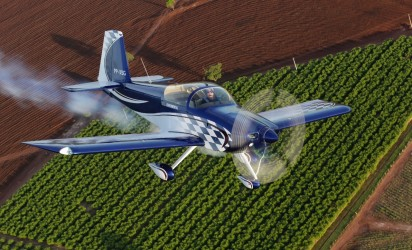

I grew up in the Arizona and Oregon and served a mission in Japan. My wife was born in Colombia, raised in Venezuela, and served a mission in eastern Washington. We met one fateful weekend in New York. We have five children. My eldest son served in Honduras until the pandemic imposed a reassignment to St. Louis. He now attends Southern Virginia University. My eldest daughter is attending Eastern Arizona College. The remaining three attend the Internatial School Manila.
We live in the Philippines where I work as a diplomat. I have seen the world and found the past two-plus decades to be a great experience for my family. I graduated from BYU in the 1990s with a degree in International Studies-Global Economy. After my wife started with Pathway and began taking BYU-I courses, I realized I was missing out on the fun. Now as a fellow student, I get to learn all the interesting subjects that I did not get to study--or that did not exist (hint: Web Fundamentals)--the first time around.
I am an inactive private pilot who hopes to get back in the air someday when there is more time and money.
